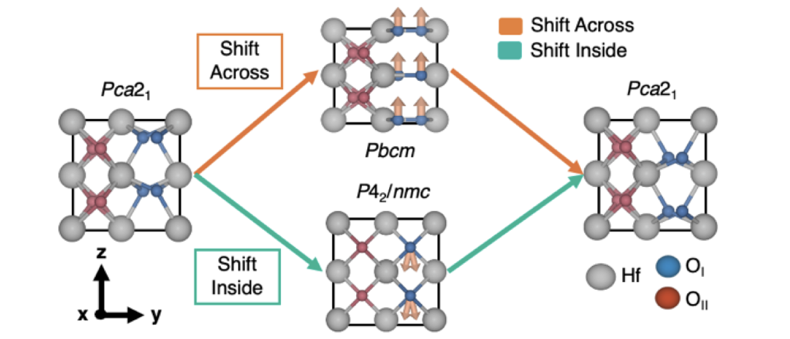

Displacement modes
Resolve atomic displacements by wavevector and symmetry-adapted irrep, with amplitudes and standard labels.
Crystal symmetry · Open-source Python
A toolkit that turns a high-symmetry parent and low-symmetry child structure into an interpretable account of displacement modes, strain, symmetry relationships, and allowed mode coupling—with no manual alignment.

From atomic coordinates to symmetry-resolved physical insight.The problem
A structural transition is more than a before-and-after pair of coordinates. DistortKit identifies the symmetry content of the change: which modes appear, how strain contributes, what group–subgroup path connects the structures, and which couplings symmetry permits.
Core capabilities
The same analysis is available from a concise command-line interface or as composable Python functions.
Resolve atomic displacements by wavevector and symmetry-adapted irrep, with amplitudes and standard labels.
Remove rigid rotation, report lattice strain, and decompose it into symmetry-resolved strain components.
Test group–subgroup relations, diagnose incompatibilities, and search for a common parent when needed.
Measure how much each symmetry component explains and identify the modes that drive successive symmetry breaking.
Compute symmetry-allowed polynomial terms and mode–mode couplings for a distortion.
Freeze selected irreps and isotropy subgroups into new crystal structures for further calculations.
Designed for real workflows
DistortKit reads POSCAR and CIF structures, can symmetrize a parent lacking explicit symmetry information, and reports diagnostics when a comparison looks unreliable. Its command line is a thin layer over the Python API, so an exploratory check can become a reproducible pipeline without changing tools.
The browser-based Phonon Viewer opens phonopy band.yaml and phononwebsite JSON files locally, connects dispersion curves to animated modes, and can display precomputed DistortKit symmetry results.
Explore next
DistortKit supports the same broader aim as my alloy tools: move analysis from opaque, one-off steps into reproducible scientific software.